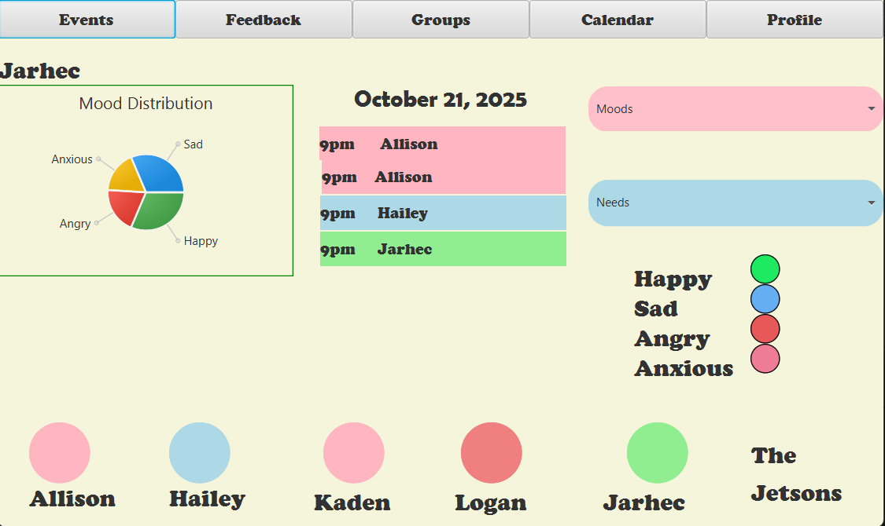

1st Software Development Project / Spring 2025
ThoughtBubble
Overview
- Problem
- Families can grow apart through distance or different communication styles, and devices are rarely used to bring them closer.
- Who it affects
- Family members who want to stay connected but find it hard to know when someone is ready to talk.
- My role
- Backend Developer (Data Layer)
- Team
- Jarhec Arreola (Fullstack Developer), Logan Bales (Backend Developer), Allison Barricklow (Frontend Developer), Hailey Hudson (Backend Developer), Kaden Martinez (Integration)
- Timeline
- Jan to May 2025.
Demo

Architecture
What it does
ThoughtBubble aims to turn screen time into family time. Each person can show how they are feeling and set a status for how open they are to talking, so the rest of the family knows when it is a good moment to reach out.
Code layout
It is a JavaFX desktop app built with Maven. The Java code lives under com.tb, and the screens are FXML view files in the resources folder. Data is kept in three CSV files: users, events and mood tracking.
Key decisions and why
The screens are described in FXML, separate from the Java code, so the layout can change without touching the logic. Plain CSV files keep the app self-contained, with no database to install.
Tech stack
- Language: Java
- Interface: JavaFX 23 with FXML views
- Build: Maven
- Data: CSV files